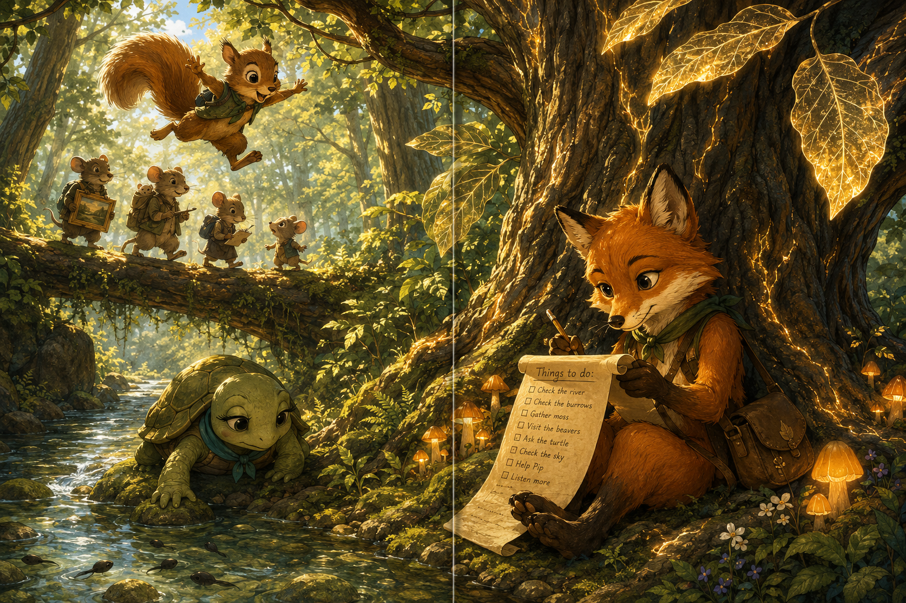
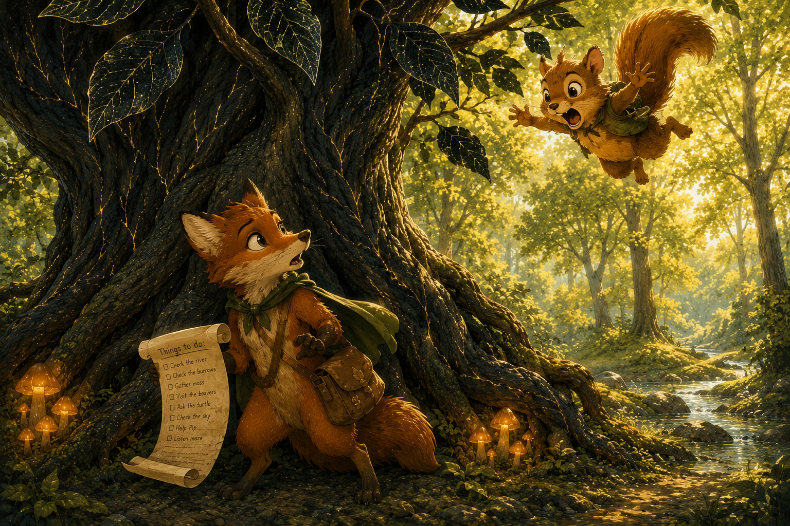
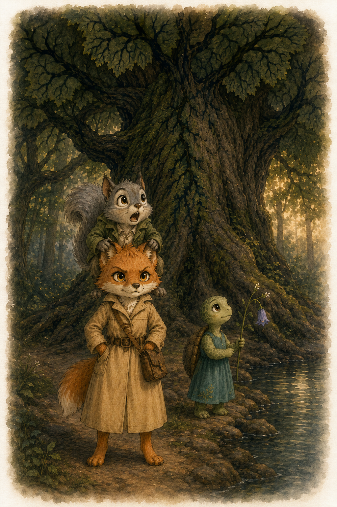
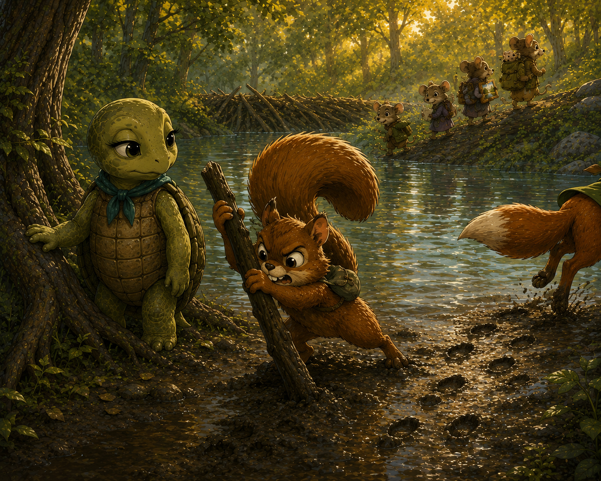
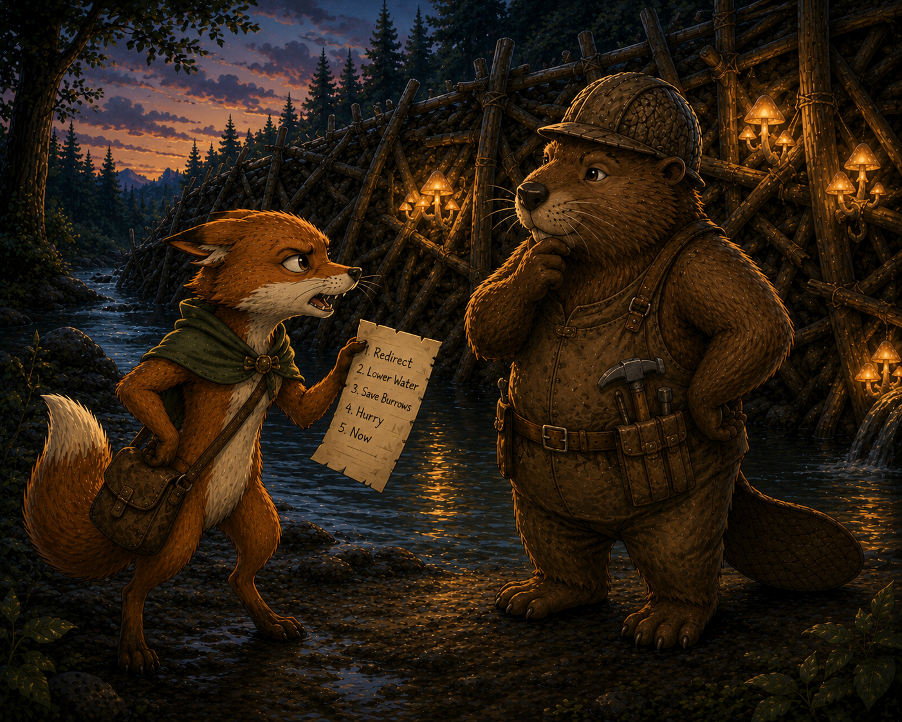
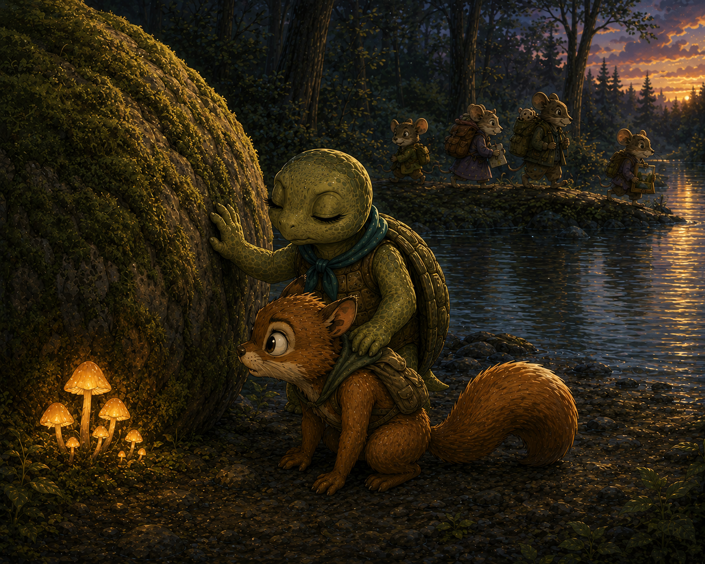
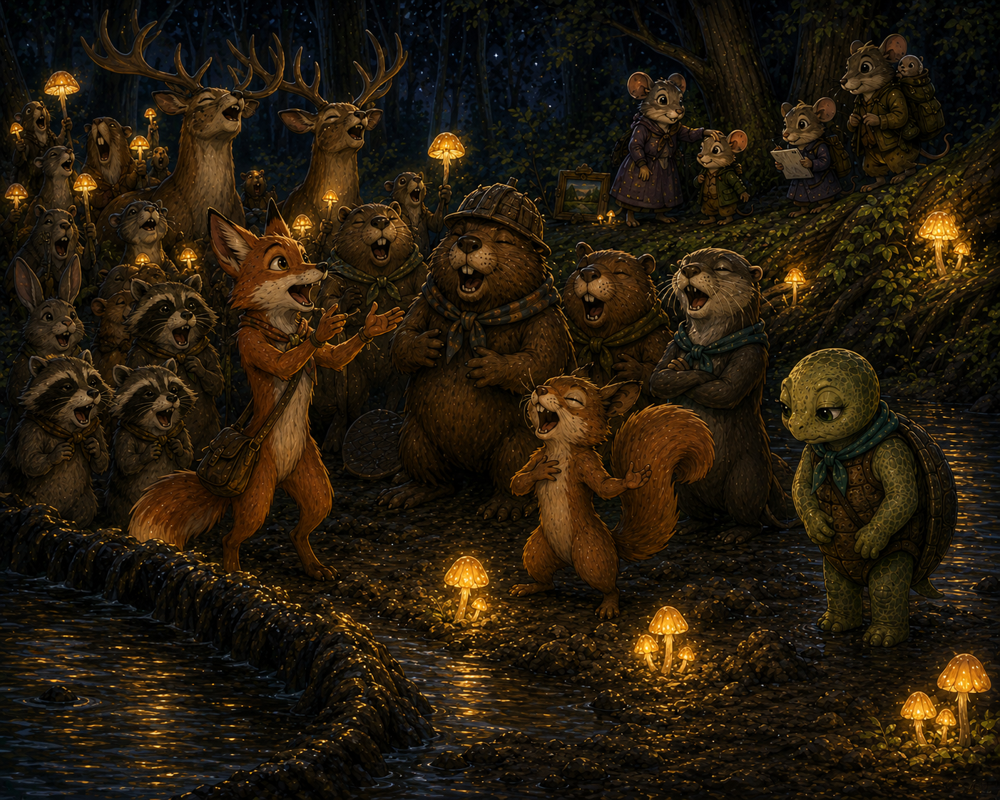
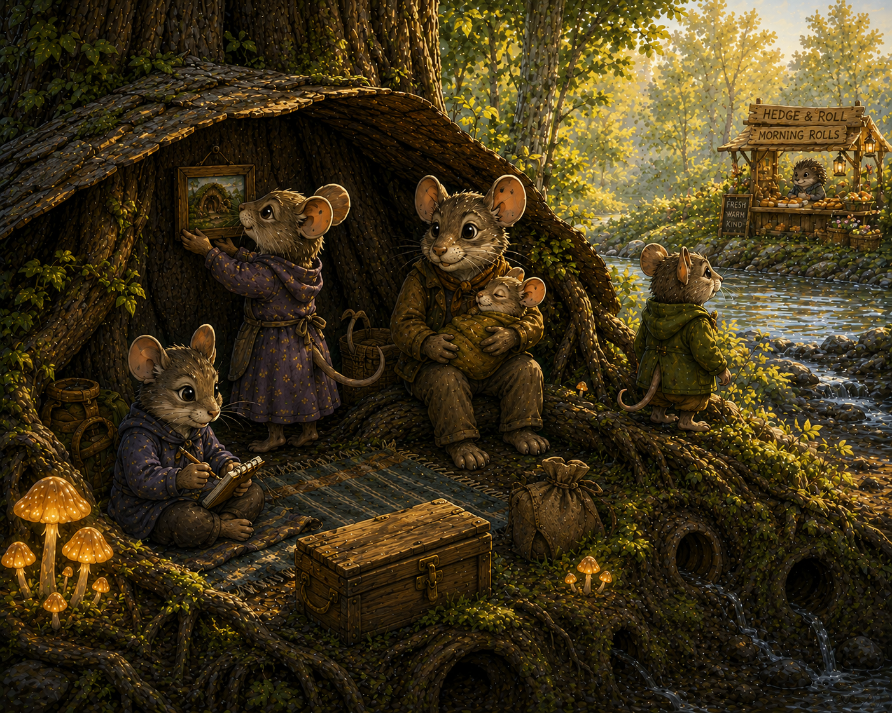
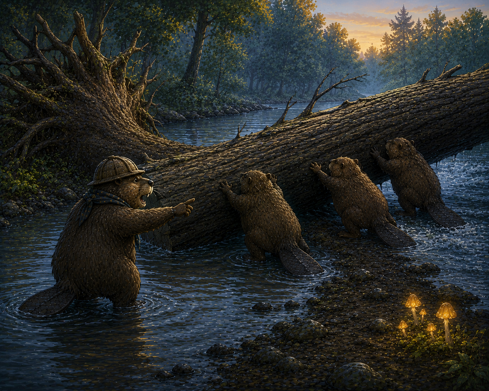

Vera sat with her back against the Mapleaf tree, adding to her list.
It was a very long list.
She glanced up at the Mapleaf’s veins the way she always did — just to check. They were golden and calm.
Good.
It was an ordinary Tuesday in Whisperwood. The herons were fishing. The mill wheel was turning. Two sparrows in the upper branches were having a very loud argument that had clearly been going on since Monday.
She looked back at her list.
Then she looked up again.
The veins had gone dark.

By the river, Sage was watching tadpoles.
She did this most mornings.
She never got bored of it.
In the branches above her, Pip was trying to leap from one tree to the next without using his hands.
He had already fallen twice.
The second time, he had taken a large branch with him.
He was going to try a third time.
Today’s entries on Vera’s list so far included: river current (normal), beaver morning shift (started), and Pip (falling, probably fine).
The village of Whisperwood had a rule. When the Mapleaf tree’s veins turned dark, something was coming.
Vera was already on her feet — list still in her paw, already facing the direction of the beavers’ dam — when Pip landed on her head.
“Something is coming,” said Pip.
“I know,” said Vera.
“The Mapleaf—”
“I know.”
“But did you see how dark the veins are? They’re almost—”
“Pip.”
“Yes?”
“I know.”
Pip flicked his tail. He did not look convinced.

Sage was no longer watching tadpoles.
She was watching the water.
It was higher than it should be. Not fast. Not churning. Just… rising. Slowly and steadily and wrong.
She placed one foot in the current. Then she took it back out.
She reached for a bellflower growing near the bank.
She rang it.
And kept ringing until they came.

Vera arrived first.
She was already talking before she reached the bank. “Flooding. The Mapleaf showed dark veins. River’s rising — we need the beavers.” She was already turning to go.
Sage opened her mouth.
“The mouse families’ burrows will flood,” said Vera, before Sage could speak. “I’ll go find the beavers.”
Sage closed her mouth.
Pip arrived second. He was out of breath and had a leaf stuck to his ear and was already holding a large stick he’d found on the way over, in case it was useful.
“What did I miss?” he said.
“Vera already knows the plan,” said Sage.
Pip looked at the river. He looked at his stick. He looked at the direction Vera had already run.
“Does she know why the river is rising?”
Sage went still. She looked at the water. She looked at where Vera had been.
“…I don’t think she asked,” said Sage.

The beavers were busy. They were always busy.
“Flooding?” said Bram. He had a hard hat made of bark and an expression that suggested he had seen many floods. “Where?”
“The burrows,” said Vera. “River’s rising. We need to redirect it.”
Bram stroked his chin.
“Can’t,” he said. “Not safely. Not quickly. Something’s come down at the river bend — blocking the channel. Until we can get eyes on it in daylight, we don’t touch a thing.”
Vera’s mouth opened. Then it closed.
Her ears went back. Just slightly.
She stood very still for exactly one breath.
“What if we—”
“Not safely,” said Bram. “Not tonight.”

Back at the river, Pip was doing what Pip always did when there was a problem. He was trying to help. He had his large stick. He had wedged one end in the bank. He was not entirely sure what he expected to happen next. But it felt better than standing still.
“Pip,” said Sage. “What are you doing?” “Helping,” said Pip. “With a stick.” “It’s a big stick.” Sage watched the water rise another inch. “Come with me,” she said. Pip looked at the stick. He set it down.
She led him to the oldest boulder at the river’s edge. Sage pressed her hand flat against it and closed her eyes. “Excuse me,” she said quietly.
Pip watched her face.
A mouse family hurried past below, bundles on their backs, moving fast and quiet.
“…Tree,” said the boulder, very slowly.
Pip leaned in. His nose was now very close to the rock. He wasn’t sure why. It just seemed like the right thing to do.
“Tree? What tree?”
Sage put one hand on his shoulder, gently. He went still.
They waited.
“…Fell,” said the boulder.
Sage lifted her hand. “A tree fell,” she said. “That’s why the water can’t go anywhere.”
Vera came back without the beavers.
She stood at the river’s edge and looked at it.
“There’s a fallen tree,” said Sage. “Blocking the channel. That’s why the water can’t go anywhere. That’s why it’s rising.”
Vera’s ears went back. Just slightly.
“At the river bend,” said Vera. “That’s what Bram said.”
Vera was silent for a moment. “A tree,” she said. “That’s what Bram could see from his end. He just didn’t say it.”
A silence.
“I knew it was flooding,” she said.
“You did,” said Sage.
“I just didn’t know why.”
“No,” said Sage. “You didn’t ask.”
A silence.
“…I should have asked why,” said Vera.
She looked at the water. Her ears stayed back.
Then, quietly: “I was already running.”
Pip patted her on the shoulder. “You got us to the beavers though! That’s still good.”
“The beavers said they can’t help yet.”
“Oh.” Pip thought about this. “Well. You got us to the beavers. That counts.”
Vera looked at him. Pip smiled his enormous Pip smile. Vera sighed. But her ears came back up.
By the time the sun went down, the burrows were knee-deep in water.
The bunnies had already begun.
They moved fast and quiet along the high paths, guiding mouse families out one by one — every safe step, every dry patch of ground, every piece of higher land known. No panic. No pushing. Just small paws and calm voices and knowing exactly where to go.
“This way, please.”
“Mind your step.”
“You’re safe now.”
Above ground, Vera looked up at the Mapleaf.
Its veins were dark — but now they pointed. One branch angled left, toward the mossy clearing.
Lantern mushrooms glowed along the bank where the group would gather.
A redirect. The mud at the bank — if everyone sang, they could open a channel pointing that way.
She was already walking toward Pip before she finished looking.
“Pip,” she said. “I need everyone who can sing.”
Pip’s eyes went wide. “Everyone?”
“Everyone.”
Pip was already gone before she’d finished the word.

They gathered at the river’s edge.
Vera. Pip. Sage. Bram and two other beavers. A family of deer. Three raccoons. The otter from the slide, who had been asked twice and complained once and showed up anyway.
It was loud. It was a lot of creatures moving in a lot of directions at once.
At the back of the crowd, Sage took a slow breath. She took a step back from the noise.
Then she looked at the mud. She looked at where the water needed to go.
She took a step forward.
She knew what her part was.
“We’re going to redirect the water,” said Vera, at the front. “Just to the mossy clearing. Just for tonight. The beavers will fix the tree tomorrow when it’s safe.”
Bram nodded. “We’ll be there at first light.”
“Low and slow,” said Vera. “On my count. Like this—”
She hummed a single note.
The mud did not move.
The deer picked it up. Then the raccoons. Then Pip — loudly and slightly to the left of the correct note, but with his whole entire body.
Sage, at the edge of the group, found the note and held it.
The mud at the river’s edge began to shift.
Slowly at first. Then more.
A small channel opened, curving left toward the clearing.
The water followed.
It was not elegant. It was not permanent.
But the river slowed.
And the burrows held.


By midnight, the mouse families were safe in temporary nests above ground.
When morning came, Bram and three other beavers arrived at the river bend at first light. The fallen tree — a great old oak, broken at the root — lay heavy across the channel.
It took four beavers and two hours.
But they moved it.
The water rushed through the cleared channel with a sound like relief. The singing mud settled quietly back into the riverbank, as if it had never moved. The redirect was gone.
By the time the sun was fully up, the burrows were draining. The herons were back at their posts. The mill wheel was turning again. The sparrows had either resolved their argument or simply started a different one.
Vera sat on a rock by the river, watching the water run clear and calm.
Pip flopped down next to her. He had mud on his nose and the large stick still in one paw, held up like a tiny torch. It was broad daylight.
Sage settled beside them both, slowly, the way Sage did everything.
“We fixed it,” said Pip.
“We fixed it,” said Vera. “Properly.”
Sage was quiet for a moment. She was looking back toward the river bend.
“The tree,” she said. “Did it fall on its own?”
Bram, still at the water’s edge, turned back toward them.
“Hard to say. The roots let go. But the damage to those roots was old. Very old.” He shook his head slowly. “I’ll remember it.”
Sage nodded. She filed it away.
“Next time,” said Vera quietly, “I’ll ask before I run.”
Pip looked at her.
“I have a feeling you’ll be saying that a lot,” he said cheerfully.
Vera stared at him.
“This is the first time something has gone wrong.”
“I know,” said Pip. “But I have a feeling it won’t be the last.”
Vera turned to Sage.
“You knew,” she said.
Sage said nothing. She nodded once.
Pip was already on his feet, stick in paw, marching off down the path toward home. The lantern mushrooms along the path glowed softly as they went.
The story of Whisperwood continues in:
Book Two: The Noisy Night
—
Collect all eight Whisperwood books.
Text © 2026 Reena Gellerup
Illustrations © 2026 [Artist Name]
All rights reserved.
Published by Whisperwood Books
whisperwoodbooks.com
First edition, 2026
Printed in the United States of America
ISBN: [to be assigned via KDP]
Whisperwood is an enchanted forest village where the magic is simply the way things work. Vera the fox knows every system. Pip the squirrel helps first and asks questions later. Sage the turtle notices what everyone else rushes past. In every book, a problem arrives — a rising river, a noisy night, a missing delivery — and the whole community must work together to solve it. No single creature, and no single plan, is ever enough on its own.
Eight books. One forest. Every problem requires everyone.
Book Two: The Noisy Night
Something is keeping Whisperwood awake — and only Sage knows how loud it really is.
Every element in Whisperwood has exactly one rule. Here are the four you met in this book.
The Mapleaf — A giant tree whose veins glow golden when all is well. When its veins go dark, something is coming. It reads like a living map of the forest.
Singing Mud — Mud that moves when a group sings together. One voice does nothing. But when the whole community hums in a low, steady tone, the mud shifts and channels itself wherever it is needed. When the singing stops, the mud slowly settles back.
Bellflowers — Small cup-shaped flowers that work like a telephone. Ring one and keep ringing until someone comes. They cannot send a message — only a call.
Talking Rocks — Ancient boulders that remember everything. They speak one word at a time, very slowly. They never lie. But patience is required.
Also in the Whisperwood series:
Book 1: The Rising River • Book 2: The Noisy Night
Book 3: The Missing Acorns • Book 4: Otter Won’t Help
Book 5: The Too-Busy Beaver • Book 6: Deer Says Yes
Book 7: The Quiet Argument • Book 8: The Forest Holds Its Breath